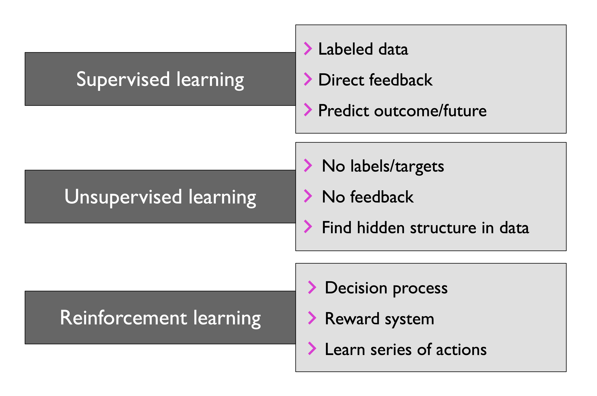
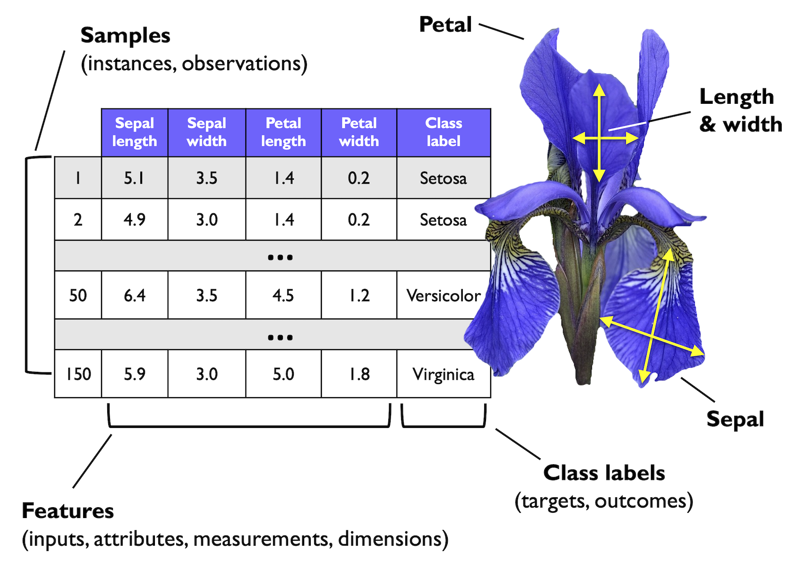

Adapted from Machine Learning with PyTorch and Scikit-Learn by Raschka et al.
Figures and selected functions used under CC BY-NC 4.0.
Markdown content and examples modified for educational use in neuroscience.
1. Introduction to Machine Learning for Neuroscience#
Chapter 1/3 — Adapted for SNEU20007U Computational Neuroscience
In neuroscience, we are surrounded by data — from spike waveforms to imaging volumes, from behavioral readouts to connectomic maps. The sheer quantity of it is both a gift and a curse. How do we make sense of it?
This is where Machine Learning (ML) comes in. It provides us with mathematical tools to extract patterns, classify, predict, and ultimately gain insight from our data without explicitly coding every rule.
This notebook is an introductory chapter where we will:
Understand what machine learning is (and isn’t)
Learn about the three major categories of ML
Discuss how ML applies to neuroscience research
Cover key terminology like “features”, “labels”, and “loss”
Replace examples using flower petal datasets with biologically-inspired synthetic neuron data
We will not dive into code in this chapter, but rather set the theoretical foundations for what follows.
…
1.1. 1. What is Machine Learning?#
Machine Learning is the science (and art) of teaching computers to learn from data. Rather than coding explicit instructions, we give a machine data and ask it to figure out the underlying structure — so that it can make predictions or decisions on new, unseen data.
We can think of ML as programming with examples.
1.1.1. ML in Neuroscience#
Predict neuron types based on spike waveform shape
Classify brain states from calcium imaging
Discover latent patterns in connectomic graphs
Model behavior from neural activity
1.1.2. Real-World Examples of ML#
Email spam detection
Image recognition
Protein folding (e.g. AlphaFold)
Forecasting hospital resource usage (COVID-19)
Brain-machine interfaces
In short: ML turns data into insight.
…
1.2. 2. The Three Types of Machine Learning#
We can divide ML into three major types, each with different assumptions about the data:
1.2.1. 2.1 Supervised Learning#
You have input data and labels.
Goal: Learn a mapping from inputs to outputs.
Neuroscience example: Classify neuron type from waveform shape.
Types:
Classification: Predict discrete labels (e.g., pyramidal vs interneuron)
Regression: Predict continuous outputs (e.g., firing rate)
1.2.2. 2.2 Unsupervised Learning#
You only have input data, no labels.
Goal: Discover hidden structure in the data.
Neuroscience example: Cluster neural activity patterns across the brain.
Types:
Clustering
Dimensionality Reduction (e.g., PCA, t-SNE)
1.2.3. 2.3 Reinforcement Learning#
An agent interacts with an environment to maximize rewards.
Neuroscience example: BCI adapting based on reward signal (e.g., movement success)
Often used in control, robotics, game playing
We will focus primarily on supervised learning in this course.
…
1.3. 3. Key Terminology in ML#
Here’s a neuroscience-friendly glossary of ML terms:
Term |
Meaning (Neuroscience Example) |
|---|---|
Feature (x) |
Measurable input variable (e.g. spike width) |
Label (y) |
Output category (e.g. neuron type) |
Sample / Row |
One observation (e.g. one spike waveform) |
Dataset |
Collection of samples |
Model |
Mathematical function learned from data |
Training |
The process of learning a model |
Prediction |
Model’s guess for new data |
Loss Function |
How wrong the model is on current predictions |
Generalization |
How well the model performs on unseen data |
ML aims to minimize the loss while maximizing generalization.
…
1.4. 4. The ML Workflow#
When using ML to solve a neuroscience problem — like classifying neurons based on waveform features — we typically follow this roadmap:
Data Preprocessing
Clean, normalize, structure your data
Feature Extraction
Derive meaningful features from raw data (e.g., spike symmetry)
Train/Test Split
Split data to train your model and evaluate it later
Model Training
Use an algorithm (e.g. logistic regression, k-NN) to learn
Model Evaluation
Assess performance with accuracy, confusion matrix, etc.
Prediction
Apply the model to new, unlabeled data
Each of these steps will be explored in detail in future notebooks.
Adapted from Machine Learning with PyTorch and Scikit-Learn by Raschka et al.
Figures and selected functions used under CC BY-NC 4.0.
Markdown content and examples modified for educational use in neuroscience.